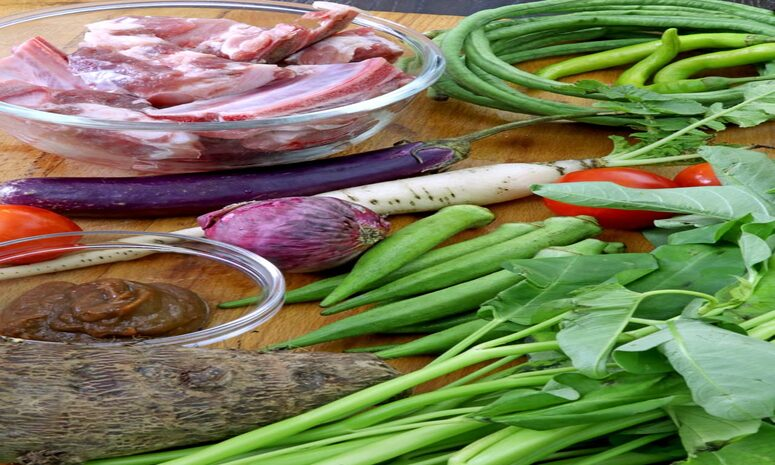
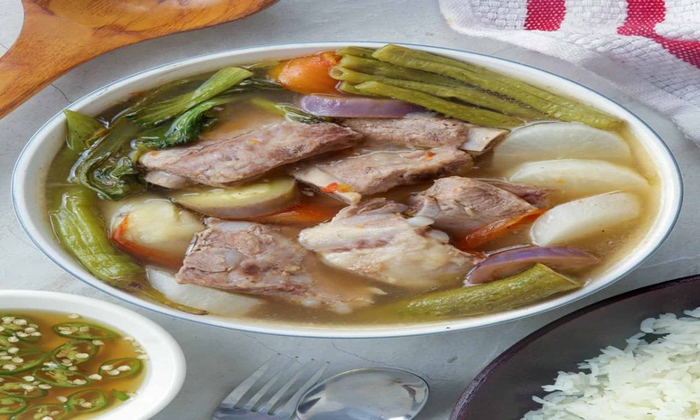

Sinigang Na Baboy

Ingredients
- 2 lbs. pork belly sliced into cubes.
- 2 to 3 cups kangkong leaves.
- 3 pieces long green chili pepper siling pansigang.
- 2 pieces tomato quartered.
- 1 cup sliced daikon radish labanos.
- 10 to 12 pieces snake beans cut in 2 inch length pieces.
- 1 piece onion quartered.
- 15 pieces okra.
- 2 pieces taro peeled and cut in half (gabi).
- 8 cups water.
- 2 packs Knorr Sinigang sa Sampaloc Mix Original (20 gram pack)
- 3 tablespoons fish sauce patis.
- ¼ teaspoon ground black pepper.

Cooking Procedures
- Pour water into a cooking pot. Let boil.
- Add onion and tomato. Boil for 5 to 8 minutes.
- Put the pork in the cooking pot. Boil for 25 minutes.
- Add the taro. Cover and continue to boil for 30 minutes.
- Add Knorr Sinigang sa Sampaloc mix, fish sauce, and ground black pepper; stir.
- Put the daikon radish in. Cook for 3 to 5 minutes.
- Add the chili peppers, okra, and snake beans. Cook for 7 minutes..
- Add the kangkong. Cover the cooking pot and turn off the heat. Let it stay covered for 5 minutes.
- Transfer to as serving bowl. Serve with a small bowl with patis and spicy chili.